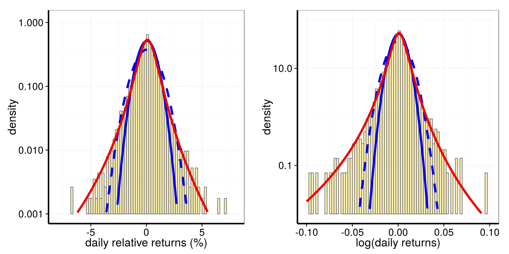
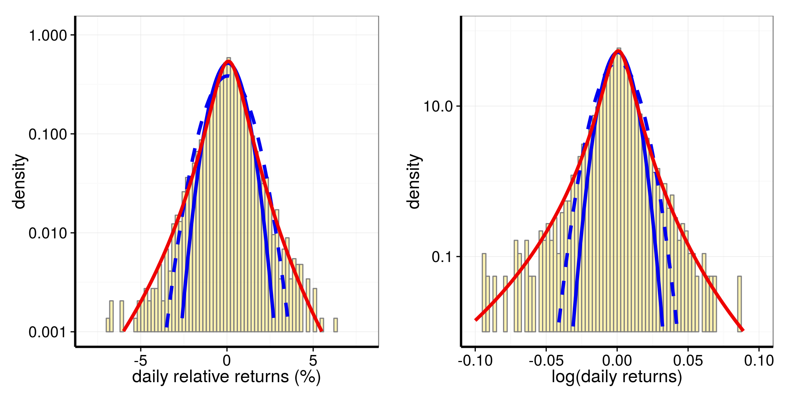
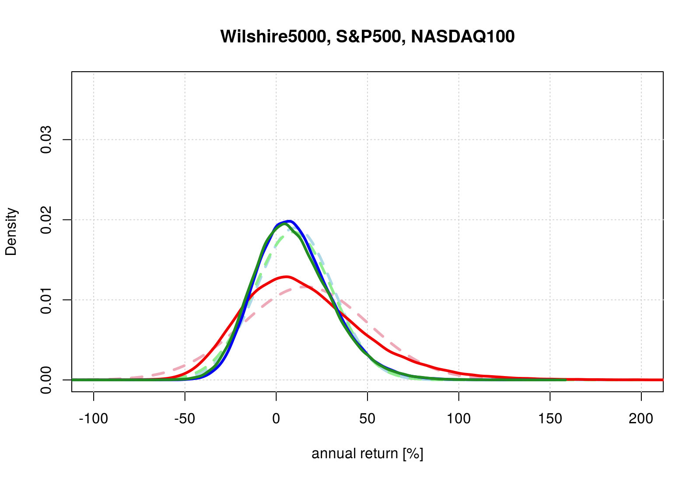

Stock Market Returns Distributions
Giovanni Fossati
PRELIMINARIES
Libraries needed for data processing and plotting:
# library("lubridate")
# library("plyr")
library("ggplot2")
library("gridExtra")Introduction
Two interesting, blog posts:
- The Generalized Lambda Distribution and GLDEX Package: Fitting Financial Return Data
- The Generalized Lambda Distribution and GLDEX Package for Fitting Financial Return Data – Part 2
The GLDEX package is available on CRAN
Libraries and Other Setup
library("quantmod")
library("GLDEX")
library("MASS")library("scales")
source("./my_functions.R")start.date <- "1986-01-01"
end.date <- "2014-12-31"
xxlin <- seq(-25.0, 25.0, by = 0.1)
xxlog <- seq(-2.0, 2.0, by = 0.001)Three Broad Market Indices : Daily Returns
Wilshire 5000
Fetch the data with quantmod:
# getSymbols("VTSMX", from = "1994-01-01")
getSymbols("VTSMX", from = start.date, to = end.date)
# [1] "VTSMX"
VTSMX.vec <- as.vector(VTSMX[, 4])Prepare returns:
WW <- prepare_data(data = VTSMX.vec, xlin = xxlin, xlog = xxlog)
WW$dates <- index(VTSMX)
WW$year <- substr(index(VTSMX), 1, 4)Distributions of relative returns and of log returns:

S&P 500
Fetch the data with quantmod:
getSymbols("^GSPC", from = start.date, to = end.date)
# [1] "GSPC"
GSPC.vec <- as.vector(GSPC[, 4])SP <- prepare_data(data = GSPC.vec, xlin = xxlin, xlog = xxlog)
SP$dates <- index(GSPC)
SP$year <- substr(index(GSPC), 1, 4)Distributions of relative returns and of log returns:

NASDAQ 100
Fetch the data with quantmod:
getSymbols("^NDX", from = start.date, to = end.date)
# [1] "NDX"
NDX.vec <- as.vector(NDX[, 4])NN <- prepare_data(data = NDX.vec, xlin = xxlin, xlog = xxlog)
NN$dates <- index(NDX)
NN$year <- substr(index(NDX), 1, 4)Distributions of relative returns and of log returns:

Three Broad Market Indices : Daily Returns
Annual from Daily Returns
Simulating annual returns by compounding daily returns drawn from the best fit generalized gamma distributions.
# typical number of market days in a year is ~252
ndays <- 252
# repeats
N <- 1e5
# N <- 1e6
set.seed(1212)
test_rr.W5000 <- rep(0, N)
for(j in 1:N) {
dummy <- rgl(ndays, WW$rr_fit_gl)
test_rr.W5000[j] <- (cumprod(1 + dummy/100)[ndays] - 1.0)*100
}
test_rr.SP500 <- rep(0, N)
for(j in 1:N) {
dummy <- rgl(ndays, SP$rr_fit_gl)
test_rr.SP500[j] <- (cumprod(1 + dummy/100)[ndays] - 1.0)*100
}
test_rr.N100 <- rep(0, N)
for(j in 1:N) {
dummy <- rgl(ndays, NN$rr_fit_gl)
test_rr.N100[j] <- (cumprod(1 + dummy/100)[ndays] - 1.0)*100
}
APPENDIX
R Session Info
sessionInfo()
# R version 3.1.3 (2015-03-09)
# Platform: x86_64-pc-linux-gnu (64-bit)
# Running under: Ubuntu 14.04.2 LTS
#
# locale:
# [1] LC_CTYPE=en_US.UTF-8 LC_NUMERIC=C LC_TIME=en_US.UTF-8
# [4] LC_COLLATE=C LC_MONETARY=en_US.UTF-8 LC_MESSAGES=en_US.UTF-8
# [7] LC_PAPER=en_US.UTF-8 LC_NAME=C LC_ADDRESS=C
# [10] LC_TELEPHONE=C LC_MEASUREMENT=en_US.UTF-8 LC_IDENTIFICATION=C
#
# attached base packages:
# [1] grid stats graphics grDevices utils datasets methods base
#
# other attached packages:
# [1] scales_0.2.4 MASS_7.3-41 GLDEX_2.0.0.2 cluster_2.0.1 quantmod_0.4-4 TTR_0.22-0
# [7] xts_0.9-7 zoo_1.7-12 gridExtra_0.9.1 ggplot2_1.0.1 knitr_1.10.5
#
# loaded via a namespace (and not attached):
# [1] Rcpp_0.11.6 colorspace_1.2-6 digest_0.6.8 evaluate_0.7 formatR_1.2
# [6] gtable_0.1.2 htmltools_0.2.6 labeling_0.3 lattice_0.20-31 magrittr_1.5
# [11] munsell_0.4.2 plyr_1.8.3 proto_0.3-10 reshape2_1.4.1 rmarkdown_0.7
# [16] stringi_0.5-5 stringr_1.0.0 tools_3.1.3 yaml_2.1.13